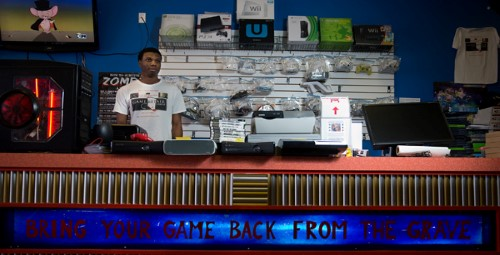
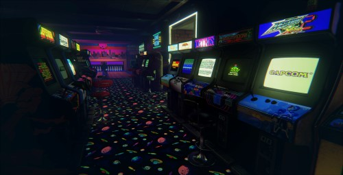

Building a PC: Here at retro replay we house a highly skilled team of pc experts with the knowledge and skills to ensure that the PC you build meets all your specifications and runs like a dream
Extended Warranties: Considering the numerous products and services we offer, it only makes sense that people want to ensure things keep running smoothly...even when they don't. Thus we offer extended warranties on many of our products and services.
Gaming Advice/Opinions: Remember the days when you'd get stuck on a level in a game and you could call someone to get help. Well we want to harkon back to this beautiful era of person-to-person contact. So, if you get stuck, call us and our experts will do all we can to help you continue progressing.
Disc Drive Errors: if none of your discs will play, or if you insert a disc and your console doesn't recognize it we can help diagnose and fix the issue
Red Ring of Death: the RRoD is a sign displayed by the 360's "Ring of Light" when there is a general hardware failure. While this can be caused by any part (or lack thereof) of the 360, the general cause is most often excessive heat, which stresses the solder joints on the CPU and GPU. Over time, these joints can become separated, which causes the Red Ring to appear after a few years of use
Numerous Other Repairs: Our team has the skills and expertise to diagnose and fix countless console issues, give us a call with your issue and we'll let you know if we can help.
Arcade Cabinets: Do you own an arcade? Do you want to setup a gaming room? Give us a call and we can help setup your gaming space to your specifications. We have helped in putting together numerous commercial and private gaming spaces. Let our expert staff get you on your way to gaming greatness.
Pinball Machines: Remember all the hours you spent playing "addams family pinball", well re-live those moments by letting our expert staff help you setup and install and old-school pinball machine at your home or arcade.
Exclusive Peripherals: Certain rare games included arcade peripherals that were made exclusively for arcades, we have many of these specialty machines available, let our staff help you discover some of these great machines of yester-year.
